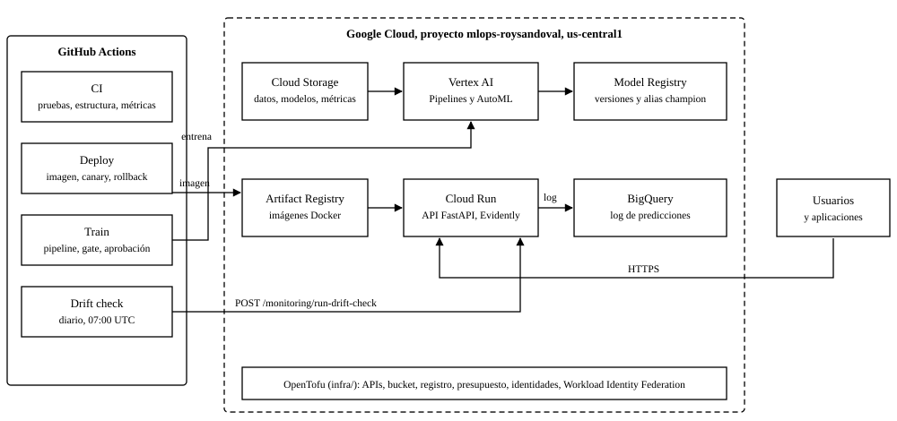
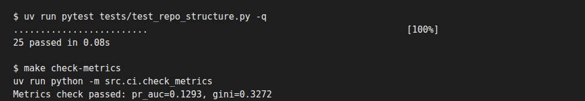
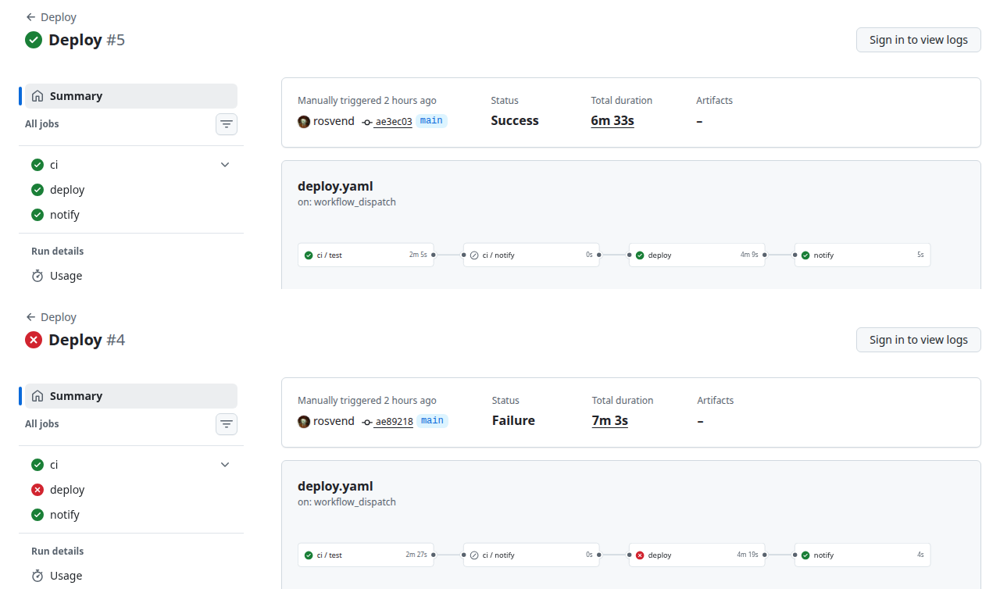
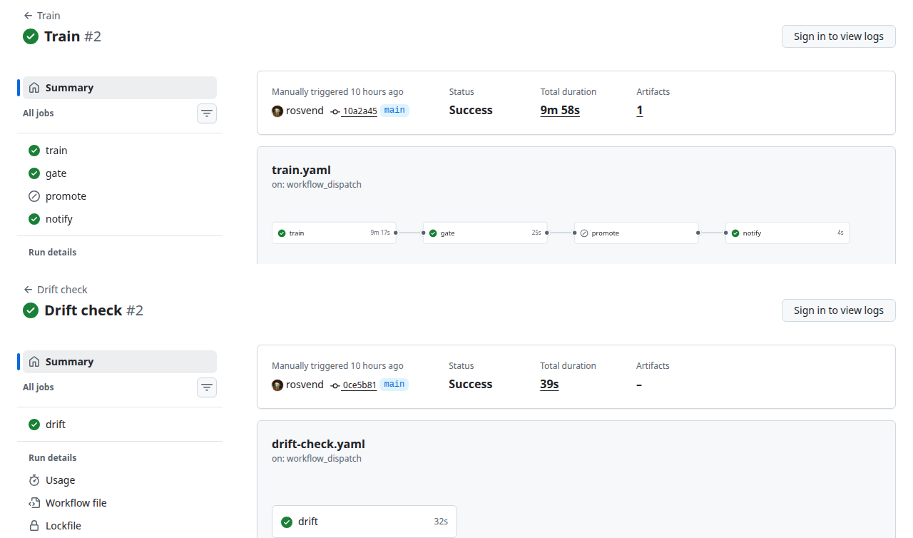
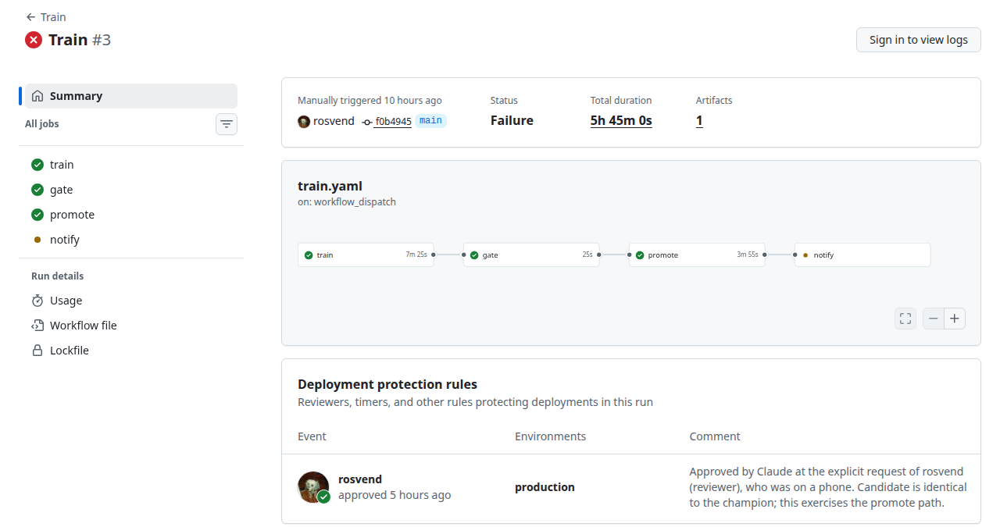
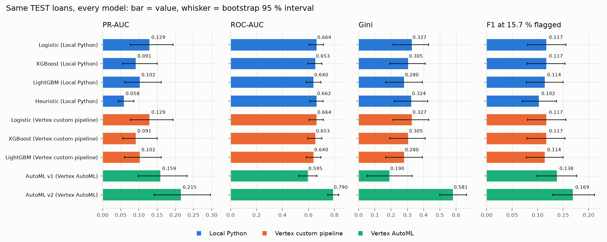
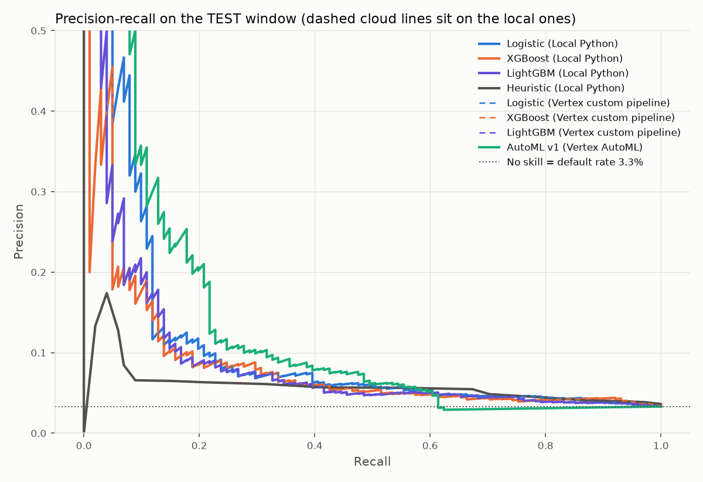
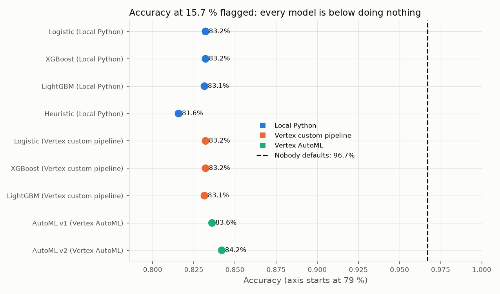

Ciencia de Datos en Producción, Universidad Pontificia Bolivariana. Entrega del 11 de noviembre de 2026.
Nombre: ____________________________________ Código: ____________________
Repositorio: github.com/rosvend/MLOps. Documentación: https://rosvend.github.io/MLOps/
Este trabajo construye de punta a punta un sistema que califica solicitudes de crédito según su riesgo de mora. Los datos son 10.763 créditos y cerca del 4,75 % cayó en mora. El modelo se entrenó primero en Python local y después en Google Cloud, con un pipeline propio en Vertex Pipelines y con AutoML Tabular. El modelo ganador se sirve desde Cloud Run y los cambios llegan a producción con GitHub Actions. El informe sigue las tres fases del enunciado: la automatización de las aprobaciones (fase 1), la comparación de modelos y herramientas en Google Cloud (fase 2) y una reflexión sobre AWS, Azure y Google Cloud (fase 3). Solo Google Cloud se construyó y se ejecutó. Lo que se dice de AWS y de Azure sale de su documentación oficial, salvo donde el texto indique que se probó. Las cifras salen de los archivos del repositorio (carpetas docs/ y reports/gcp/).

docs/gcp/overview.md.El enunciado pide un Jenkinsfile. Usamos GitHub Actions porque el profesor permitió otras tecnologías, así que el repositorio no tiene Jenkinsfile y no se escribió uno. El código ya está en GitHub y los runners que GitHub aloja evitan instalar y mantener un servidor Jenkins. Los pipelines son archivos YAML en .github/workflows/ y se revisan en los pull requests como el resto del código. El acceso a Google Cloud usa Workload Identity Federation: el workflow cambia un token de corta vida y no hay llaves guardadas en GitHub. Con Jenkins habría que guardar credenciales en el servidor. Jenkins tendría más sentido en un equipo con servidores propios, que no es el caso.
{{T}}: Requisitos de la fase 1 y su equivalente en GitHub Actions.
| Requisito del enunciado | Cómo se cumple | Archivo |
|---|---|---|
| Jenkinsfile | Workflows en YAML: CI y Deploy cubren el pedido; Train y Drift check completan el ciclo del modelo. | ci.yaml, deploy.yaml, train.yaml, drift-check.yaml |
| Primer paso: clonar el repositorio | Primer paso del job de CI: actions/checkout. El runner empieza vacío. | ci.yaml |
| Prueba de estructura de carpetas | tests/test_repo_structure.py comprueba que existan las rutas de config/ci/repo_structure.yaml. Para exigir una carpeta nueva se agrega una línea al YAML. | ci.yaml |
| Prueba de métricas de evaluación | make check-metrics lee models/champion.meta.json y falla si PR-AUC es menor que 0,12 o Gini menor que 0,30 (config/ci/metric_thresholds.yaml). Después corre pytest completo. | ci.yaml |
| Disparadores automáticos | CI: pull request y push a main. Deploy: push a main que toque el código del servicio (filtros de rutas; un cambio en docs/ no despliega) y, ya desplegada la revisión, juzga el canary con métricas de Cloud Monitoring. Train: cada lunes 06:00 UTC, cambios en el código de entrenamiento o deriva detectada. Drift check: cada día 07:00 UTC. | los cuatro |
| Notificación al final | El job notify usa if: always(), así que corre aunque fallen las pruebas. Escribe el resultado en el resumen de la ejecución y lo publica como comentario en el commit con gh api. GitHub envía ese comentario por correo al autor del commit, sin servidor de correo propio. | ci.yaml, deploy.yaml, train.yaml |
El job de CI sigue este orden: clonar, instalar Python y dependencias con uv sync (versiones fijas en uv.lock), iniciar sesión en GCP, reconstruir las features, bajar el modelo campeón, validar estructura, validar métricas, correr pytest y notificar. Un pull request desde un fork no recibe token de identidad, por eso el job omite los pasos que usan la nube; la estructura y las pruebas sin nube sí corren.

El workflow Deploy llama primero a CI. Después construye la imagen con el SHA del commit como etiqueta, crea una revisión de Cloud Run sin tráfico, prueba /health y una predicción de ejemplo, y pasa el 10 % del tráfico. Con ese 10 % analiza la revisión nueva con métricas de Cloud Monitoring: envía 40 solicitudes de prueba a cada revisión durante 2,5 minutos, espera dos minutos a que Cloud Monitoring se ponga al día y lee de cada revisión el número de solicitudes, la proporción de errores 5xx y el p95 de latencia. Hace rollback si la revisión nueva tiene menos de 20 solicitudes en las métricas, más de 2 % de errores 5xx, un p95 sobre 6 s o sobre el doble del p95 de la anterior, o si falla alguna prueba (los límites están en config/ci/canary.yaml). Si pasa, el tráfico va al 100 %. Si cualquier paso falla, un paso final devuelve todo el tráfico a la revisión anterior y la ejecución termina en rojo.
El rollback se usó de verdad. El 11 de noviembre un smoke test excedió el tiempo de espera en una revisión en frío, el workflow restauró la revisión anterior y falló la ejecución (Deploy #4 en la {{ref:deploy}}). Se ajustó la prueba para tolerar el arranque en frío y la ejecución siguiente (#5) pasó completa. El 12 de noviembre el análisis con métricas se ejecutó tres veces. La primera falló por un error nuestro: un comando de etiquetado quitó la etiqueta candidate, las pruebas no llegaron a la revisión nueva y el análisis hizo rollback con «solo 4 solicitudes en las métricas». Ya corregido, una ejecución normal pasó: la revisión nueva tuvo 45 solicitudes, 0 % de errores 5xx y un p95 de 153 ms, contra 41 solicitudes y 308 ms de la anterior, y recibió el 100 % del tráfico. En la tercera se fijó el tope de latencia en 1 ms a propósito y falló («p95 de 203 ms sobre el tope de 1 ms»), con rollback.
Este canary tiene límites. La mayor parte del tráfico que juzga es tráfico de prueba, porque el tráfico real es poco. Mira errores y velocidad, no la calidad de las predicciones. Y dura unos cinco minutos (docs/gcp/deployment-flow.md).

deploy en rojo (7 min 3 s) y notify en verde. Ejecuciones 43121043675 y 43119956072.Un modelo nuevo no llega a producción por subir código. El workflow Train entrena tres candidatos en Vertex AI, la puerta (src/gcp/gate.py) compara el mejor con el campeón sobre las mismas filas y propone promover solo si la mejora de PR-AUC es de al menos 0,005 y el intervalo bootstrap pareado de la diferencia tiene su límite inferior sobre cero. Si propone promover, el job promote se detiene en el entorno production hasta que el revisor aprueba. Después se copian los tres archivos del campeón, se registra una versión nueva en el Model Registry, se mueve el alias champion y se lanza Deploy.
Esto se ejecutó dos veces. En Train #2 (9 min 58 s) la puerta respondió «keep»: el candidato y el campeón son el mismo modelo logístico (PR-AUC 0,1293 en ambos) y promote se omitió. En una segunda ejecución con force_promote el job promote esperó la aprobación, copió los archivos, registró la versión 2 de loan-default-scorer y movió el alias. El comentario de aprobación de la {{ref:aprob}} dice que la hizo el asistente de IA a petición del revisor; el candidato era idéntico al campeón, así que se ejercitó la ruta sin cambiar el modelo. Esa ejecución figura como fallida: la anotación es un «Internal server error» de GitHub y notify no llegó a correr. No se investigó más la causa. Los dos Deploy lanzados después de la promoción tampoco arrancaron, durante un incidente de GitHub en Actions ese mismo día; el workflow había corrido bien antes, y se anota como un fallo de plataforma por repetir.
El workflow Drift check llama cada día a POST /monitoring/run-drift-check de la API privada con un token de identidad. En su ejecución #2 (39 s) detectó deriva y lanzó un Train. La deriva era artificial: el tráfico de prueba fue un mismo crédito repetido.

promote omitido por la puerta) y Drift check #2 (abajo, 39 s). 11 de noviembre de 2026. Ejecuciones 43044039876 y 43048336590.
production y su comentario de aprobación. 11 de noviembre de 2026. Ejecución 43046530838.Dos límites de esta fase. La puerta evalúa sobre los meses de prueba, que ya se usaron antes para elegir modelo, así que un «promote» sería evidencia más débil de lo que parece. Y nunca hubo una decisión «promote» real, porque todos los candidatos fueron iguales al campeón.
Todo vive en un proyecto (mlops-roysandoval) y una región (us-central1), lo que evita errores y costos entre regiones. La configuración se escribió con OpenTofu en infra/: las APIs (Vertex AI, Cloud Run, Cloud Build, Artifact Registry, Storage, IAM), un bucket privado, el repositorio de imágenes, una alerta de presupuesto al 50 % y al 90 % de 100 USD (avisa, no frena el gasto) y la identidad de CI sin llaves. La cuenta github-ci tiene solo los permisos que usa: escribir en un repositorio de imágenes, desplegar en Cloud Run sin poder cambiar políticas IAM, actuar como scoring-api y leer un bucket. La API corre con otra cuenta (scoring-api) y el pipeline de Vertex con una tercera (vertex-pipeline).
Los créditos se dividen por mes de originación y no al azar. Los meses más antiguos entrenan y los más nuevos evalúan; una partición aleatoria dejaría al modelo ver créditos de los mismos meses en que se evalúa. Todos los modelos usan la misma partición, local o en la nube, así que sus cifras se pueden comparar.
{{T}}: Partición por mes de originación.
| Partición | Créditos | Tasa de mora | Uso |
|---|---|---|---|
| TRAIN | 5.528 | 5,3 % | Entrenar |
| VALIDATE | 2.185 | 5,3 % | Validación de AutoML (los últimos meses de entrenamiento) |
| TEST | 3.050 (101 moras) | 3,3 % | Se lee una vez para comparar |
La tasa baja de 5,3 % a 3,3 % en TEST. Puede ser que los créditos recientes no hayan tenido tiempo de caer en mora, pero eso es una hipótesis que no pudimos probar. Cada transformación (medianas, imputación, codificación) se ajusta solo con filas de entrenamiento y se aplica a las demás. Las medianas que se usaron para AutoML v2 salen de TRAIN. La columna puntaje, que filtra información, y los identificadores quedan fuera del archivo.
Como solo el 3,3 % de TEST cae en mora, las métricas de decisión se calculan con un punto de operación: se manda a revisión manual el 15,7 % de las solicitudes con mayor puntaje, la misma proporción que usa el código de entrenamiento. Las métricas de ranking (PR-AUC, ROC-AUC, Gini) no dependen de esa elección.
Python local: cuatro modelos (una heurística de referencia, regresión logística, XGBoost y LightGBM) con búsqueda de hiperparámetros con Optuna y seguimiento en MLflow; el ajuste toma unos 2,5 minutos. Pipeline propio en Vertex Pipelines: los mismos tres modelos entrenan en paralelo, un paso final los compara y exporta el mejor. Los hiperparámetros se copiaron de la corrida local y no se re-ajustaron. Cada paso corre en una VM e2-highmem-2 sin GPU, creada y borrada por Vertex, y la ejecución completa tarda unos 6 minutos. Se necesitó una imagen Docker (construida con Cloud Build), permisos IAM para que Vertex la descargue y la definición del pipeline. Varias primeras ejecuciones fallaron por IAM o por la imagen.
AutoML Tabular: probó transformaciones, familias de modelos e hiperparámetros por su cuenta con el mínimo de presupuesto (1 node-hour), el objetivo maximize-au-prc y la columna de partición predefinida. La corrida v1 duró de las 03:55 a las 06:10 UTC (unas 2 h 15 min). No creamos endpoint.
La corrida v1 no pudo puntuar 884 de los 3.050 créditos de TEST (29 %), porque tenían una celda numérica vacía y AutoML la rechaza al predecir. El pipeline local imputa esos valores y agrega indicadores de «faltaba». En la comparación, esos 884 créditos recibieron puntaje 0. La corrida v2 repitió el entrenamiento con los datos ya imputados (medianas de TRAIN) y puntuó los 3.050 créditos, así que es la que se compara con los demás. Hubo que pagar un segundo entrenamiento (v2 de 14:35 a 16:48 UTC).
Las métricas que informa Vertex (PR-AUC 0,970 en v1 y 0,973 en v2) no se pueden comparar con las nuestras. Parecen agrupar las dos clases, de modo que el 96 % de créditos sin mora domina; además, en v1 cubren 2.166 créditos y no los 3.050. Que usen esa agrupación es consistente con la matriz de confusión del informe, pero la documentación que encontramos no lo dice, así que no está verificado. Por eso recalculamos todas las métricas igual para todos los modelos, con los puntajes de cada uno sobre las mismas filas.
La tabla de abajo reúne todas las métricas sobre TEST. El enunciado menciona RMSE: no aplica a una clasificación sí o no, porque no hay un valor numérico cuyo error medir. Su análogo es el puntaje de Brier, el error cuadrático medio de las probabilidades (0 es perfecto). La heurística da puntos y no probabilidades, por eso su Brier es «n/a». Los corchetes son intervalos bootstrap al 95 % (se remuestrean los 3.050 créditos 1.000 veces).
{{T}}: Métricas sobre TEST (3.050 créditos, 101 moras). Precisión, recall, F1 y accuracy usan el 15,7 % de mayor puntaje como cola de revisión.
Hay cuatro hechos que salen de la tabla y de los intervalos pareados. Primero, la regresión logística local y la de Vertex son el mismo modelo con los mismos números, como era de esperar. Segundo, XGBoost, LightGBM, la logística y AutoML v1 no se pueden separar: sus intervalos se cruzan y la diferencia pareada incluye el cero. Tercero, la heurística tiene un PR-AUC peor que la logística de forma distinguible (diferencia de −0,128 a −0,023), aunque su ROC-AUC es casi igual. Cuarto, AutoML v2 es la excepción: su PR-AUC es 0,215 contra 0,129 de la logística, la diferencia pareada va de +0,047 a +0,126 y su ROC-AUC (0,790) no se cruza con el de la logística (0,664). El PR-AUC de la heurística es 0,058 en la tabla y 0,059 en una tabla de docs/gcp/training.md; usamos 0,058 de phase2_tables.json.

docs/gcp/plots/metric_bars.png).

La accuracy engaña en este problema. Un «modelo» que no marca a nadie acierta el 96,7 % de las veces y no detecta ninguna de las 101 moras. Los modelos reales tienen una accuracy cercana al 83 %, porque para atrapar morosos hay que marcar uno de cada seis créditos y casi todos los marcados pagan (la precisión es de 6 % a 10 %). Por eso el PR-AUC es la métrica principal: solo mira la cola de revisión y los créditos fáciles no lo inflan. ROC-AUC y Gini se muestran porque los bancos los usan, pero con tan pocas moras los buenos pagadores dominan la curva ROC y favorecen a todos los modelos. Sobre Brier, un modelo que da a todos la tasa de entrenamiento (5,3 %) obtiene unos 0,032 en esta ventana: la logística (0,032) queda igual, XGBoost (0,042) peor y LightGBM (0,131) tiene probabilidades demasiado altas, útiles solo para ordenar.
{{T}}: Diferencia máxima entre los puntajes del modelo local y el de Vertex sobre TEST.
| Modelo | Diferencia máxima |
|---|---|
| Logística | 8,0e-15 |
| XGBoost | 0 |
| LightGBM | 0 |
Reproducibilidad. El mismo modelo entrenado en el portátil y en una VM de Vertex da puntajes iguales hasta el redondeo de punto flotante. Con los mismos datos, el mismo código y la misma semilla, el resultado no depende de dónde corra. Pasar a la nube cambia dónde y cuánto tarda el trabajo, no lo que se aprende. En cambio, AutoML no deja controlar la búsqueda y una repetición podría dar otro modelo; no lo probamos.
Ruido de muestreo. Con 101 moras los intervalos son anchos: unos ±0,05 a ±0,08 en PR-AUC, ±0,05 en ROC-AUC y ±0,04 en F1. Una mora más o menos mueve el PR-AUC de forma visible. Los valores puntuales son rangos y el orden de los modelos por PR-AUC no está demostrado, salvo lo dicho de la heurística y de AutoML v2.
Validación cruzada frente a la ventana fuera de tiempo. La validación cruzada fue optimista para todos los modelos, y casi el triple para los árboles que para la logística.
{{T}}: PR-AUC en validación cruzada (media ± desviación) y en TEST.
| Modelo | CV | TEST | Brecha |
|---|---|---|---|
| Logística | 0,161 ± 0,025 | 0,129 | +0,031 |
| XGBoost | 0,187 ± 0,014 | 0,091 | +0,096 |
| LightGBM | 0,181 ± 0,011 | 0,102 | +0,079 |
Una explicación probable es que los árboles son lo bastante flexibles para ajustar rarezas de los meses de entrenamiento que después no se repiten. Parte de la brecha también viene de que la tasa de mora cambió (5,3 % a 3,3 %) y el PR-AUC depende de esa tasa.
Variación entre meses. Al validar la logística en cuatro meses consecutivos, entrenando siempre con los anteriores, el PR-AUC medio fue 0,160 (desviación 0,074, entre 0,097 y 0,259) y el ROC-AUC medio 0,703 (desviación 0,050, entre 0,646 y 0,757). Cada mes tiene entre 47 y 69 moras. Esa variación es tan grande como la diferencia entre nuestros modelos, otra razón para no ordenarlos. Los valores de TEST de la logística (0,129 y 0,664) quedan dentro del rango. En la investigación aparte (docs/investigation/model-signal.md) las ganancias menores de 0,01 no se distinguieron del ruido con estos datos.
Madurez de la etiqueta. Si los créditos recientes aún no tuvieron tiempo de caer en mora, TEST es algo benigno para la clase «sin mora» y todas las cifras se miden contra una etiqueta inconclusa. Es una hipótesis consistente con los datos, no un hallazgo.
{{T}}: Comparación del camino manual (Python o pipeline propio) y AutoML.
| Aspecto | Manual (Python local o Vertex Pipelines) | Vertex AutoML |
|---|---|---|
| Control | Total: variables, validación, métrica, umbral | Se elige objetivo y presupuesto; lo demás queda oculto |
| Transparencia | Cada paso es código; se leen coeficientes e importancias | Conjunto de modelos de caja negra; hay algunas explicaciones y ningún archivo del modelo |
| Costo | Local: gratis. Pipeline propio: centavos (menos de 0,25 USD con todos los intentos, estimado) | Unos 21 USD por entrenamiento con el mínimo de 1 node-hour, más menos de 1 USD de predicción por lotes (estimado, sin factura) |
| Tiempo | Unos 2,5 min local; unos 6 min en el pipeline | Unas 2 h 15 min de entrenamiento |
| Reproducibilidad | Misma semilla, mismo modelo | La búsqueda no se controla; una repetición puede variar (no se probó) |
| Valores vacíos | Se manejan dentro del pipeline | v1 rechazó filas con celdas vacías; hubo que imputar antes (v2) |
| Fuga de datos | Se controla ajustando solo con entrenamiento | Hay que asegurar que el archivo subido ya la respete |
| Conocimiento necesario | Ciencia de datos e ingeniería | Poco; sirve como primera línea base |
| Mejor para | Producción, auditoría, decisiones de crédito reguladas, reentrenamientos repetidos | Líneas base rápidas, equipos sin ingenieros de ML, una segunda opinión |
En esta ventana AutoML v2 ordena mejor a los morosos que nuestros modelos, y la evidencia es la más fuerte de todo el trabajo (PR-AUC y ROC-AUC de la {{ref:t_res}}). Los datos tienen más señal de la que mostraban nuestros modelos, que se quedan entre ROC-AUC 0,64 y 0,66. La importancia de variables que publica AutoML apunta a las consultas recientes de crédito (huella_consulta, 15,7 %), el plazo (plazo_meses, 12,7 %) y el puntaje de la central de riesgo (12,6 %). El efecto del plazo es no lineal (el riesgo es más bajo cerca de 11 o 12 meses y más alto sobre 24) y un modelo lineal no lo puede usar. Esta explicación es plausible y se puede comprobar, pero no está demostrada.
No reemplazamos el campeón por AutoML v2 por cuatro razones. Primera, es una ventana con 101 moras y ya se usó antes para comparar modelos, así que no es una prueba limpia. Segunda, AutoML v2 se corrió después de ver el resultado de v1 en la misma ventana; cambiamos el preparado de datos y no el modelo, pero fue una segunda mirada. Tercera, cuesta unos 21 USD y 2 h 15 min por entrenamiento y es una caja negra; servirlo pediría un endpoint de Vertex siempre encendido o una exportación, y no hicimos ninguna. Cuarta, la madurez de la etiqueta afecta a todos los modelos. El argumento a favor del camino manual sigue siendo el costo, el control, la rapidez, la reproducibilidad exacta y poder explicar una decisión de crédito. El de AutoML es concreto aquí: encontró estructura que nuestros modelos no vieron. El siguiente paso es agregar el efecto del plazo y algunas interacciones al pipeline manual y evaluarlos con meses que todavía no se hayan usado.
El campeón se sirve desde una API FastAPI en Cloud Run (privada, escala a cero). Cada predicción se anota en una tabla de BigQuery y Evidently, que corre dentro del contenedor, compara ese log con los datos de entrenamiento para detectar deriva. Los modelos se registran como versiones de loan-default-scorer en el Model Registry, con alias challenger y champion. Usamos Evidently y no Vertex Model Monitoring porque Evidently ya funcionaba; no probamos la alternativa.
La API se probó con una colección de Postman (10 solicitudes y 26 aserciones, 0 fallos contra el servicio real) y con Locust (20 usuarios durante 60 s: unas 8 solicitudes por segundo, mediana de 700 ms, p95 de 1,6 s y p99 de 2,8 s). Las pruebas encontraron dos cosas. La primera llamada tras un rato inactivo tardó 34 s por el arranque en frío. Y un error real: una solicitud sin un campo opcional se registraba con NaN, BigQuery rechazaba la fila y la API respondía 500 en el 28 % de las solicitudes del primer ensayo. Ahora se escribe null y un fallo del log no puede tumbar una predicción; el segundo ensayo no tuvo errores en 480 solicitudes.
loan-default-scorer con las versiones 1 y 2 y el alias champion]scoring-api, pestaña Revisiones con la división del tráfico]mlops_monitoring.predictions, vista previa de filas]Solo Google Cloud se construyó y se ejecutó. Nada se creó ni se pagó en Azure. Lo que sigue sobre Azure sale de su documentación y sus páginas de precios oficiales, leídas el 11 de noviembre de 2026, y nadie en el proyecto comprobó esas afirmaciones haciéndolas. En AWS sí se hizo una prueba práctica, pero solo del servicio de la API (sección 3.3): una función Lambda con imagen de contenedor, URL privada, canary por alias y OpenTofu, todo destruido al terminar y comprobado con la CLI. No se entrenó nada en SageMaker, no hubo monitoreo gestionado y el log de predicciones fue un SQLite efímero. Todo lo demás de AWS es documentación. Cada celda de AWS dice si se probó o si es documentación. Los precios son de lista, con región y fecha de lectura, y cambian. Los costos de GCP son estimaciones con precios de lista, porque el proyecto no tiene exportación de facturación. Donde algo no se pudo confirmar se escribe «no verificado». Es un trabajo de una persona, un proyecto y unos 10.000 créditos, y varios puntos empresariales (muchos roles, auditoría, normas) tampoco se ejercitaron en GCP.
{{T}}: Equivalencias de servicios (nombres verificados el 11 de noviembre de 2026).
| Necesidad | Google Cloud (usado) | {{AWS_COLUMNA}} | Azure (según la documentación) |
|---|---|---|---|
| Almacenamiento | Cloud Storage | Amazon S3 (se probó: bucket versionado para el modelo) | Blob Storage |
| Registro de imágenes | Artifact Registry | Amazon ECR (se probó) | Azure Container Registry |
| AutoML tabular | Vertex AI AutoML Tabular | SageMaker Autopilot, la interfaz pasó a SageMaker Canvas (documentación) | Azure ML automated ML |
| Orquestación de pipelines | Vertex AI Pipelines (KFP) | SageMaker Pipelines (documentación) | Azure ML pipelines (también Azure Pipelines y Data Factory) |
| Registro de modelos | Vertex AI Model Registry | SageMaker Model Registry (documentación) | Registro de modelos de Azure ML |
| Contenedores sin servidor | Cloud Run | Lambda con imagen de contenedor, Lambda Web Adapter y Function URL (se probó). ECS Express Mode sobre Fargate no se probó; App Runner está cerrado a clientes nuevos (documentación) | Azure Container Apps |
| Login de CI sin llaves | Workload Identity Federation | Proveedor OIDC de IAM y un rol. El rol se escribió y se verificó con el simulador de políticas; nunca se asumió desde GitHub | Credencial federada en Entra |
| Monitoreo de deriva | Evidently propio (Vertex Model Monitoring existe, no se usó) | No se construyó: el log fue SQLite efímero. Model Monitor está cerrado a clientes nuevos y AWS sugiere Evidently, MLflow y CloudWatch (documentación) | Monitoreo de modelos de Azure ML |
Cada nube tiene una plataforma de ML (Vertex AI, SageMaker, Azure Machine Learning) que reúne AutoML, pipelines, registro y seguimiento, y servicios genéricos alrededor. Las plataformas son la parte más difícil de trasladar.
{{T}}: Los 14 puntos. La columna de Google Cloud es experiencia propia; las de AWS y Azure son lectura de documentación.
| N. | Punto | Google Cloud (se probó) | {{AWS_COLUMNA}} | Azure (según la documentación) |
|---|---|---|---|---|
| 1 | Facilidad de configuración | Se hizo con OpenTofu. Fallos: el presupuesto creado justo tras habilitar su API dio SERVICE_DISABLED (se repitió apply); las credenciales locales traían otro quota project; un error de tipeo en una API pasó plan y falló en apply; el agente de servicio de Vertex necesitó artifactregistry.reader. | Se probó, con OpenTofu: sin APIs que habilitar ni errores de propagación, y el apply de función, alias, URLs, roles y log no dio errores. Fricciones: la función no se crea sin una imagen (apply en dos pasos), el proveedor OIDC de GitHub ya existía y hubo que leerlo, y Docker reciente pide --provenance=false. La cuenta no tenía límites bajos, lo que no es típico de una cuenta nueva. | Suscripción y un workspace de Azure ML; si no se aportan, crea almacenamiento, Key Vault y Application Insights. Un bloqueo de recursos puede impedir que los clusters escalen. |
| 2 | Interfaz gráfica | Casi todo con código y gcloud. La consola se usó para leer resultados y cambió de marca durante el trabajo (la API sigue siendo aiplatform). Se usó poco y no se puede calificar. | Según la documentación: SageMaker Pipelines tiene editor visual y SDK, y la interfaz de Autopilot pasó a Canvas. No se usó. | Azure ML studio ofrece AutoML sin código y un Designer de pipelines. Si alguna supera a la consola de GCP no se verificó. |
| 3 | Curva de aprendizaje | Lo difícil no fue el código de ML sino la identidad (cuentas de servicio, quién actúa como quién), el contenedor del pipeline y leer la salida de AutoML. El tiempo de escritura no se midió. | Se probó solo el servicio: unos nueve conceptos (ECR, imagen y Web Adapter, función con versión y alias, Function URL con AWS_IAM, firma SigV4, roles de ejecución y de despliegue, proveedor OIDC, bucket S3, log). Pipelines, según la documentación: muchos conceptos (parámetros, pasos, caché, reintentos, programación, modo local). | Divide los pipelines en tres tecnologías (Azure ML, Data Factory, Azure Pipelines): útil, pero son tres cosas por aprender. Qué tan empinada es cada curva no se verificó. |
| 4 | Tiempo total de implementación | Local: 2,5 min de ajuste. Pipeline propio: unos 6 min por ejecución, sobre todo arranque de VM. AutoML: unas 2 h 15 min. Predicción por lotes de AutoML: unos 22 min. | Se probó solo el servicio: unos 20 minutos de reloj con OpenTofu, hecho después de la versión de GCP y por alguien que ya conocía la API. El de GCP no se cronometró, así que no hay comparación directa. Pipelines: sin dato. | Sin dato. La documentación dice que crear un cluster de cómputo toma «aproximadamente cinco minutos». |
| 5 | Costos de entrenamiento y despliegue | Pipeline propio: menos de 0,25 USD con todos los intentos. AutoML: hasta unos 22 USD con la predicción (estimados), más de 80 veces el pipeline. Cloud Run escala a cero. | Servicio probado: menos de 0,05 USD en total, calculado con precios de lista (Cost Explorer mostró 0 por su retraso); en reposo solo cuesta el almacenamiento en ECR y S3. Entrenamiento, según la documentación: sin cargo aparte por Autopilot ni Pipelines. | Sin cargo adicional por Azure ML; se paga el cómputo. Cuántas horas de VM usaría AutoML aquí no se sabe. |
| 6 | Uso de recursos (CPU/GPU) | Sin GPU. Pasos del pipeline en e2-highmem-2 (2 vCPU, 16 GB); predicción por lotes en n1-standard-2; la API en CPU. | Lambda con 1 GB de memoria (se probó). Entrenamiento en el tipo de instancia elegido y ECS Express Mode sobre Fargate (documentación). | Clusters de CPU o GPU que escalan a cero; VM de baja prioridad más baratas pero interrumpibles. No se comparó precio de GPU. |
| 7 | Tiempo de ejecución | En la nube el entrenamiento fue más lento que local: tres pasos pequeños tomaron unos 6 min y el ajuste del modelo, de 0,7 a 5,8 s. La nube se justifica con datos grandes, programación y auditoría. | Se probó: 33 s en la primera solicitud, 53 s con una versión nueva (la primera dio 502 por tiempo de espera) y 9 s tras unos 10 min inactiva; mediana en caliente de 0,37 s desde un portátil, sobre todo red. Es el mismo orden que Cloud Run (34 s), con imágenes distintas. Caché de pasos de SageMaker Pipelines: documentación. | Los pipelines reutilizan la salida de pasos sin cambios. El efecto real de cualquiera de las dos no se midió. |
| 8 | Costos de almacenamiento y ejecución | Unos MB en Cloud Storage y Artifact Registry; el log de BigQuery queda dentro del nivel gratuito (estimado, no una factura). | Se probó: dos imágenes de unos 0,5 GB comprimidos en ECR menos de una hora y 0,6 MB en S3. Precios (documentación): S3 Standard 0,023 USD por GB-mes (Oregon); ECR 0,10 USD por GB-mes. | Blob Hot LRS: 0,0208 USD por GB-mes (East US). ACR Basic: 0,1666 USD por día con 10 GB incluidos. |
| 9 | Precio de servicios equivalentes | AutoML tabular: 21,252 USD por node-hour (visto en un resultado de búsqueda, no en la página de precios). Los precios de Cloud Run y Cloud Storage no se pudieron leer. | Fargate x86 en N. Virginia: 0,0404784 USD por vCPU-hora y 0,004446 por GB-hora; sin tarifa propia de AutoML (documentación). Para Lambda no se leyó un precio unitario. | Container Apps Standard en East US: 0,000024 USD por vCPU-segundo activo, 0,000003 por GiB-segundo y 0,40 por millón de solicitudes; cuota gratuita mensual y sin cargo al escalar a cero. |
| 10 | Integración con CI/CD | Cuatro workflows. Login con Workload Identity Federation y una condición sobre rosvend/MLOps. Un nombre de claim equivocado (assertion.hub en vez de assertion.sub) falló solo en el primer intento de login. | El workflow aws-deploy.yaml se escribió y pasó actionlint, pero nunca se ejecutó en GitHub: el login OIDC desde CI no se probó. El rol de despliegue solo se verificó con el simulador de políticas (puede actualizar alias y código; se le niega DeleteFunction, iam:CreateRole y s3:PutObject). | App registration en Entra con credencial federada y azure/login. En ambas cambiaría sobre todo el login y los comandos de despliegue; el traslado no se probó. |
| 11 | Monitoreo, versionado y gobierno | Model Registry con versiones y alias; Experiments con una corrida por candidato; Evidently propio. No se usó Vertex Model Monitoring. | No se construyó monitoreo en AWS. Según la documentación: registro con grupos y estado de aprobación, MLflow gestionado, Model Monitor cerrado a clientes nuevos. | Registro por nombre y versión; monitoreo integrado de deriva de datos y de predicciones; eventos con Event Grid. |
| 12 | Automatización y despliegue continuo | Canary con smoke tests y rollback automático, que se disparó una vez de verdad. El ciclo entrenar, puerta, aprobar, promover y desplegar corrió salvo el redespliegue final, que falló por un incidente de GitHub. | Se probó a mano un canary con alias ponderados: alias candidate para el smoke test, 10 % en live, 100 % y rollback devolviendo el alias (unos segundos). Con 30 llamadas a /health, la versión nueva atendió de 10 a 15 % (muestra pequeña). El rollback del workflow solo reacciona a un smoke test fallido, sin alarma de CloudWatch: tiene menos análisis automático que el de GCP. ECS Express Mode no se probó. | Container Apps admite varias revisiones con división de tráfico; los endpoints online de Azure ML despliegan por porcentaje. |
| 13 | Control de acceso, auditoría y cumplimiento | Mínimo privilegio en infra/ci.tf. No se leyeron los Cloud Audit Logs ni se usó un informe de cumplimiento. | Se probó una URL privada: una solicitud sin firma recibió 403, y los roles de ejecución y de despliegue van separados. CloudTrail y Artifact, según la documentación: 90 días de eventos de gestión (más con trails o CloudTrail Lake) e informes ISO, PCI y SOC. | El Activity Log guarda 90 días y se exporta a Log Analytics para más tiempo. RBAC con Entra. |
| 14 | Entornos empresariales con muchos roles | Una persona y varias cuentas de servicio; los roles se simularon con identidades de máquina y un entorno de GitHub con revisor. El estado de OpenTofu es local. No se usaron políticas de organización, carpetas ni grupos. | Según la documentación: con facturación consolidada, las cuentas miembro crean sus presupuestos; AWS Organizations aparece en la documentación de CloudTrail. | Workspaces como contenedores de acceso, costo y datos; roles; grupos de Entra; workspaces «hub» para gobierno central. |
Qué nube es más fácil para una empresa grande depende de su sistema de identidad actual (Entra, IAM Identity Center o Google Workspace). Es un razonamiento y no se verificó.
Para un proyecto de estudiante, Google Cloud funcionó de punta a punta y los costos fueron pequeños salvo AutoML, pero la regla más útil es elegir la nube donde ya hay cuenta y créditos; las ofertas para estudiantes de AWS y Azure no se revisaron. Para una empresa pequeña conviene la nube que el equipo ya conoce y mantener portable el código del modelo. Cloud Run escaló a cero aquí y Azure Container Apps también lo hace según su documentación; el servicio simple de AWS, App Runner, está cerrado a clientes nuevos y se recomienda ECS Express Mode, con un balanceador facturado debajo. Para una empresa regulada, la nube que encaje con su identidad y su cumplimiento: hay piezas documentadas en AWS (CloudTrail, Artifact) y en Azure (Activity Log, grupos de Entra), la auditoría de GCP no se ejercitó aquí y el ajuste regulatorio real exige una revisión que no hicimos.
En la prueba de AWS, desplegar la misma API fue más difícil en Lambda que en Cloud Run: hubo que agregar un adaptador, cambiar la ruta escribible del log y vivir con un límite de 10 s de inicialización, y el arranque en frío fue de decenas de segundos en ambas. A cambio, la configuración con OpenTofu fue más fácil, sin APIs que habilitar. El log de predicciones no es equivalente (SQLite efímero frente a BigQuery), así que en AWS se perdió el chequeo de deriva.
Lo que más pesó en este proyecto fue la diferencia entre comodidad y control. AutoML costó más de 80 veces lo que el pipeline propio (21 USD frente a menos de 0,25 USD, ambas estimaciones), rechazó filas con celdas vacías y es menos transparente; sin embargo, fue el que encontró más señal. Servir en Cloud Run y vigilar con Evidently, en vez de endpoints y monitoreo de Vertex, mantuvo el código portable y barato en reposo, a cambio de construir y mantener más. Para 10.000 créditos la nube sumó arranque y costo sin mejorar el modelo propio. Y los servicios cambian: dos servicios de AWS de esta comparación están cerrados a clientes nuevos y la consola de Google cambió de nombre mientras trabajábamos.
Del repositorio, la API FastAPI y su imagen Docker corrieron en AWS Lambda con un Dockerfile nuevo y una variable de entorno, y eso se probó. El entrenamiento local, MLflow, Evidently y la lógica de la puerta se podrían mover con cambios pequeños, y eso no se probó. Se reescribirían la definición del pipeline de Vertex y su envío, el trabajo de AutoML, el código del Model Registry, los recursos google_* de OpenTofu, el login y los comandos gcloud run del canary y el cliente de BigQuery. Quedan por probar, entre otras cosas, correr el mismo pipeline en SageMaker y en Azure ML y medir el tiempo, correr un AutoML en cada una con el mismo archivo de partición, ejecutar el login de GitHub contra AWS, comparar ECS Express Mode, desplegar en Azure Container Apps y leer una factura real.
El sistema funciona de punta a punta en Google Cloud: pruebas y despliegue automáticos, entrenamiento con puerta y aprobación, un modelo servido con registro de predicciones y vigilancia de deriva. La comparación dejó que el camino manual y el pipeline propio dan el mismo modelo local y en la nube, y que AutoML v2 ordena mejor a los morosos en la ventana de prueba. Los límites son estos. Hay una sola ventana de prueba con 101 moras, ya usada antes para elegir modelos, y la puerta evalúa sobre esos mismos meses. AutoML se corrió una vez por versión y su resultado no se repitió. La madurez de la etiqueta es una hipótesis sin probar. El canary de GCP juzga errores y latencia durante unos cinco minutos, en su mayor parte con tráfico de prueba, y no mira la calidad de las predicciones; el de AWS se hizo a mano. El reentrenamiento semanal rehace el mismo modelo, porque los datos son un CSV fijo. Los costos son estimaciones con precios de lista y no se leyeron de una factura. En AWS solo se probó el servicio de la API, sin SageMaker ni monitoreo, y todo lo de Azure es documentación. La comparación la hizo una sola persona en un solo proyecto.